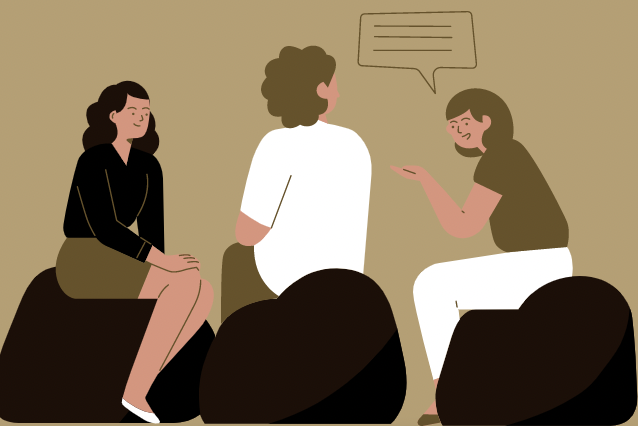

Ensomhed på Studiet
Er du også en af dem der lider er ensomhed på det nye studie? Så er her et par tips til hvordan du kan komme ud af den boble af ensomhed, og starte på en frisk.
At føle sig ensom, er ikke det samme som at være alene eller bo alene.

Ensomhed er en del af studiet, så de er mere end klar på at hjælpe. Det hjælper at sige det højt for nogen, især hvis man ved de har et par taktikker til hvordan man løser det.
Det er faktisk et stort problem i Danmark, hvor statistiker viser at 12% af alle studerende følte sig ensomme. Så, du er ikke alene.
Det kræver at man sætter sig selv derud, for at få knækket koden om ensomhed. Studier har som regel et par arrangementer her og der, eller et par klubber endda. Prøv at melde dig til et af dem. Når der kommer et arrangement, så være med. Sandsynligheden for at der er andre der gerne vil have nye venner, er stor. Hvis dit studie har mange forelæsninger, så sæt dig dog sammen med nogen, i stedet for helt bagerst alene.
I har noget tilfælles hvis I har valgt det samme studie. Der er også stor mulighed for at lade sig inspirere af sine medstuderende, og omvendt.
Ensomhed er en del af studiet, så de er mere end klar på at hjælpe. Det hjælper at sige det højt for nogen, især hvis man ved de har et par taktikker til hvordan man løser det.
FEEDBACK
Hjalp denne artikel dig?